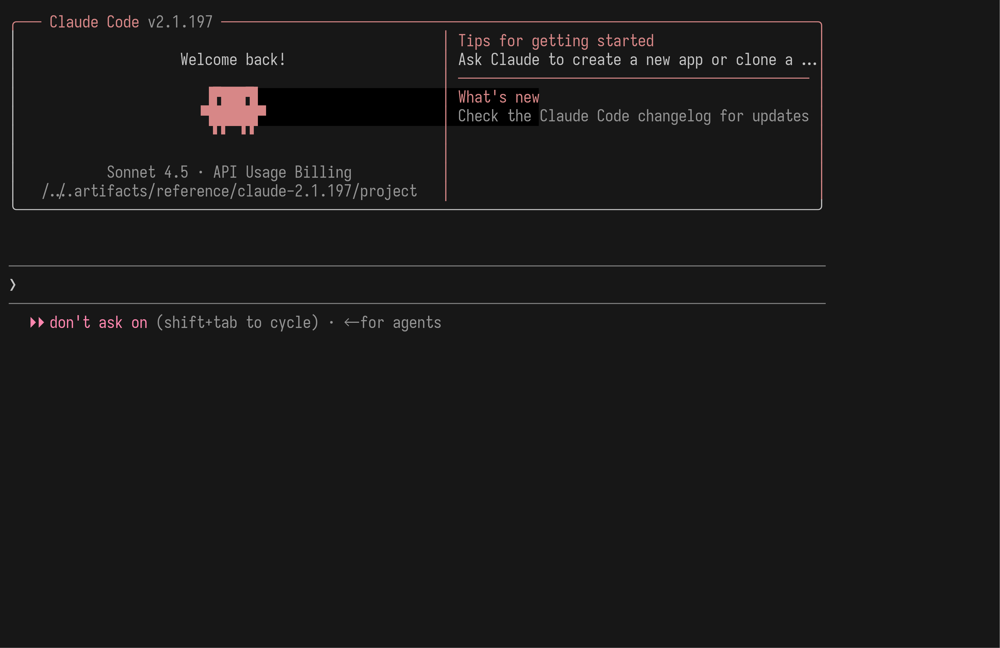
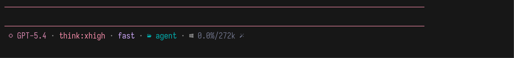
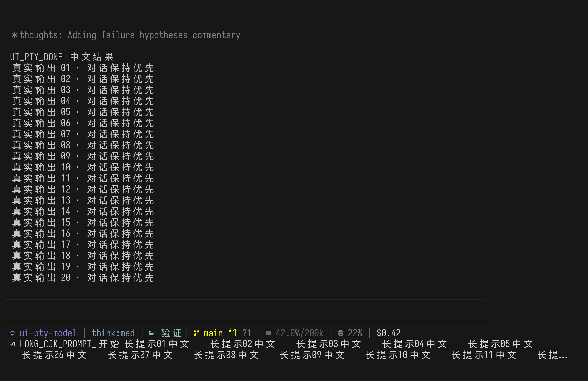
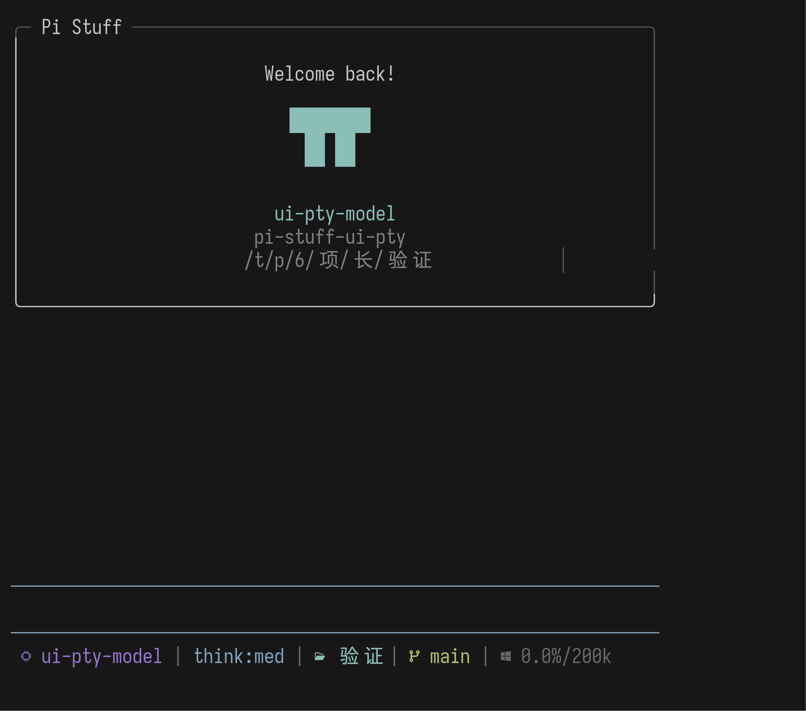
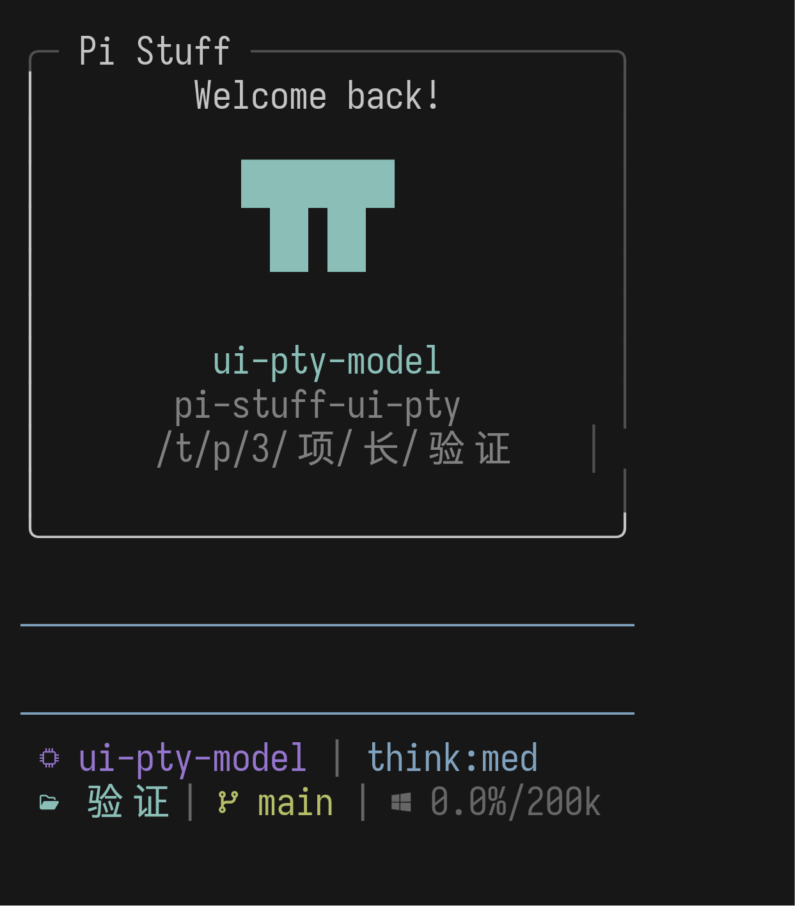
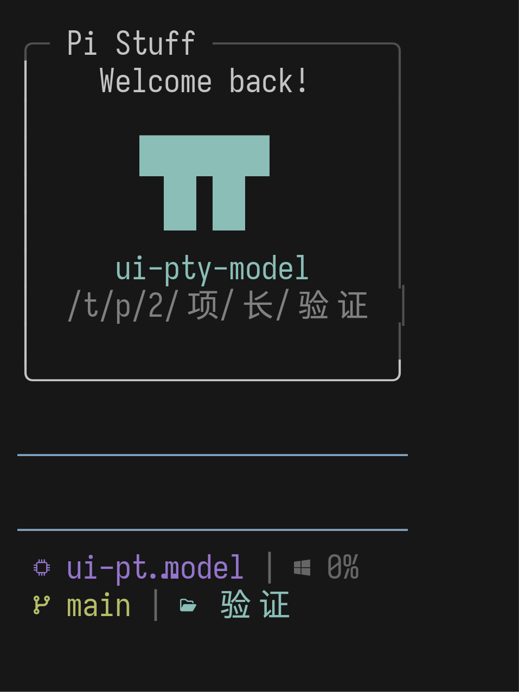
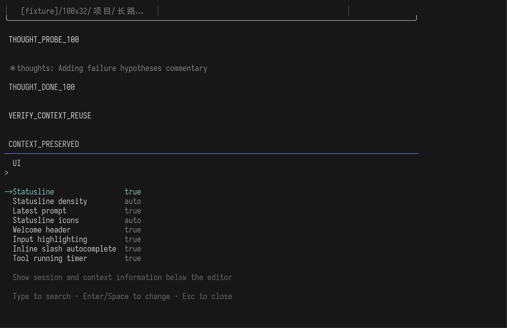
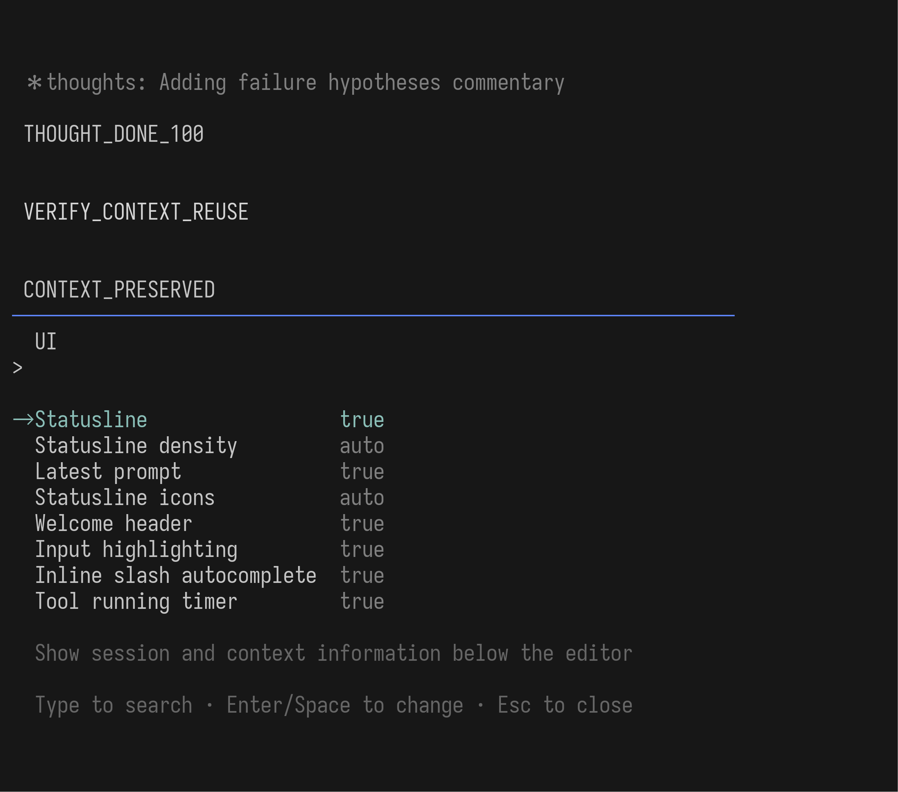
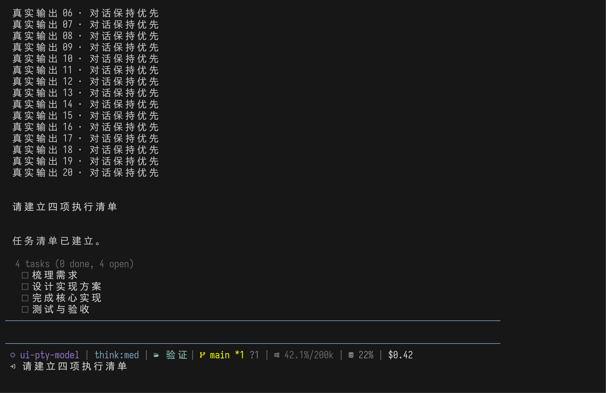
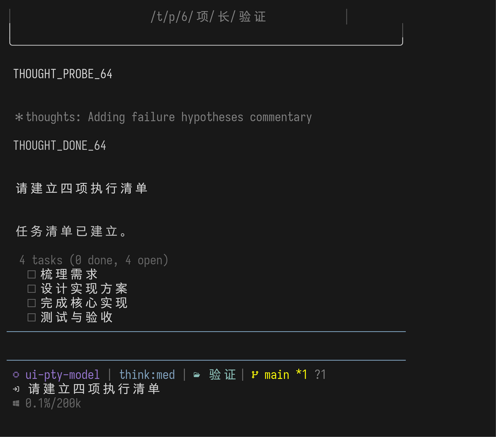

启动信息属于对话开头，不属于固定屏幕边框。
宽屏复现 Claude Code 2.1.197 的固定双栏卡片；窄屏切成单栏，低高度只减少空白。它通过 Pi 的 Header 区进入 transcript，后续对话自然把它滚走。
{kind=link}

真实旧版 Claude Code PTY：标题嵌入顶边、左侧身份区固定、右侧只放提示；这三项几何关系是复刻依据。

左侧固定 52 格，保留欢迎语、块状 π、模型和目录；右侧显示启动提示与实际加载统计。

统计和提示整体让路，不在窄屏中硬换行；身份信息使用完整的十三行卡片节奏。

只减少一行空白，顶边、欢迎语、标志、模型、provider 和目录都不会被推出 viewport。

Welcome 没有固定占用顶端空间；正常 transcript 填满 viewport 后，它已经离开当前画面。
可复现：说明、PTY 捕获脚本、生产组件挂载 Fixture。
一眼读完环境状态，不把能力活动塞进底栏。
当前生产版按用户截图恢复一格外边距、图标和灰色 | 分隔。顺序是模型、Thinking、仅开启时出现的 Fast、目录、Git、Context、缓存命中率，以及费用或 Codex weekly limit。Agent、Todo、BTW 与 Tool 活动留在各自界面，不重复占据 Statusline。

图中上方是 FleetView；本轮要复刻的是最底部 Statusline 的一格外边距、图标、字段顺序和灰色 | 分隔。
{kind=link}

旧配置保留了字段和图标，但使用圆点分隔；它只证明迁移内容，不覆盖用户截图确定的最终视觉语法。
{kind=link}

真实流式回合结束后，Context、缓存命中率和按量费用都来自同一会话；长 Prompt 最多占下方两行。
{kind=link}

空间不足时按完整 segment 流到第二行，不会出现半个图标、半个字段或黏连的省略号。
{kind=link}

模型、目录、分支与 Context 仍然可读；低优先级字段先退出，不把整行截成无意义字符。
{kind=link}

每一行都经过真实终端 cell 宽度检查；Prompt 在这个宽度完全让路。
可复现：说明与 生产 Aggregate PTY 验收。同一验收还覆盖实时 resize、订阅模型不显示伪费用、Fast 的条件显示，以及临时界面取得焦点时整块隐藏。
/ui 只管显示方式，不变成整个 Suite 的设置仓库。
八项显示设置使用 Pi 原生 SettingsList：全宽、非浮动、输入即搜索，Enter 或 Space 即时切换。RTK 等能力行为留在自己的命令下，例如 /rtk settings。
{kind=link}

Statusline 的密度、Prompt 和图标也在这里；Tool timer 作为纯显示选项由 Tools 贡献进同一列表。
{kind=link}

窗口缩窄时不另造布局；八项、当前值、选中说明与原生操作提示仍能同时读完。
可复现：说明与 生产 Aggregate PTY 验收。验收会实际搜索、切换布尔值和枚举值、重启 Pi，再确认八项持久化结果。
Summary 与任务紧凑成一组，起点跟对话内容一致。
Agent 在真实回合中连续调用四次 TaskCreate 后，第一行向内两格，任务行向内三格；两者之间没有空白行。列表位于编辑器上方，不进入 Statusline，也不生成浮动窗口。
{kind=link}

4 tasks (0 done, 4 open) 与第一项竖向紧邻；四个方格共享同一列，不受上方对话长度影响。
{kind=link}

窗口变窄不会改动 Todo 的起点或加入空行；Summary 和四个方格仍作为一个紧凑整体出现。
可复现：真实 Pi PTY 验收会在 100 和 64 列保留 Pi Stuff 工具、只禁用 Host 内置工具，并逐项检查两格 Summary、三格任务行、相邻行距和终端宽度。
四个入口看起来不同，但服从同一套边界。
thoughts: 依赖已认证的 Pi Host API；缺失时明确报错，不静默换成另一套效果。Fullscreen 滚动条接受宿主固定的 auto。/ui 与 Todo 的当前真实可见效果。
截图直接来自生产组件与真实 Pi 0.83 PTY。Welcome 已按 Claude 参考重做；Statusline、/ui 与 Todo 均通过完整 Aggregate 验收。